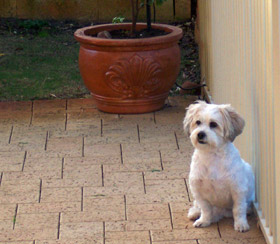

| |

 
Attività 4 Casa dolce casa!
Listen to two Italian teenagers who are visiting Australia talking about their houses in Italy.

Photo courtesy of S Gilbert.
|
Ecco Davide
To help you understand what Davide says, follow his description written here.
Allora, io vivo in una villetta, è abbastanza grande, molto grande. Un grande giardino, dove il mio cane può correre da una parte all’altra. ll mio cane è bellissimo, si chiama Bjorg (...) nome svedese. Mi manca tanto. Niente.
La casa mi piace ... due piani. Niente.
Davide uses the word niente several times in his description.
Niente literally means ‘nothing’, however, Davide is using it as a fill
in word while he thinks. |
|
Show your understanding of what Davide says by putting the words into the correct order.
Listen to what Federica has to say then fill in the table below by clicking in the appropriate column depending on whether the statement is true or false. When you are finished, click on the Risposte button to compare answers.
Davide sends his family in Italy an email in which he describes the house of the family with whom he is staying.
| |
Ciao mamma, papà e Bjorg. Qui tutto bene! E voi?
Mi trovo benissimo con la famiglia. Tutti sono molto simpatico. La casa è
molto bella e comoda! La nostra villetta è abbastanza grande ma questa è
enorme!!! Qui quasi tutti abitano in una casa!
Ci sono quattro camere da letto e due bagni. Poi ci sono il salotto formale,
un soggiorno e una sala da pranzo. C’è una lavanderia e il garage è per due
machine! In Italia queste cose sono rare.
Il giardino è piccolo ma questo è perche c’è una piscina grande. Incredibile,
vero? Ma qui è abbastanza comune avere una piscina.
La casa si trova molto vicino al mare – infatti e a due passi. Che bello! C’è
anche un parco. Spesso andiamo a fare una passeggiata sulla spiaggia o al parco.
Mi piace molto vivere qui in Australia. C’è molto spazio! C’è tanto verde! In Italia lo spazio è
limitato. Gli australiani sono veramente fortunati.
Mi mancate...specialmente Bjorg!!!
Baci
xxxxx
Davide |
Answer the questions in worksheet_B1.4.
La mia casa means ‘my house’. To find out how to express possession in
Italian, go to Il possessivo (singular form).
At this stage you need only be able to use the possessive in a limited sense
to speak about la casa, la città and la camera (da letto). It will be developed
further later on in the course. |
 |
|
|